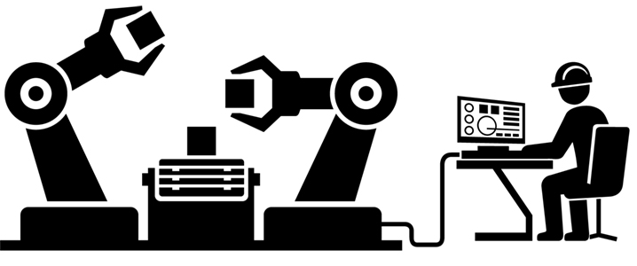

About Me

Welcome to my mini portfolio site
My name is Abdurahman and most of the time friends call me Abdu for short. I am a manufacturing Engineering Tech currently working Robotic company .I am a person who has high passion in design technology ,art and music .One of my dream is to master all the design technologies and become one of the Top designer .I love to solve problems. In my high school they provide lots of career information and recommend choosing a career based on interest and talents. At first I was at a lost for what might even interest me but over the months I have begun recognize that I enjoy helping people .I counsel all of my friend and read many books on philosophy, new age perspectives, and psychology .I brought these interests to my parents....once .It didn’t go well. How do I join my new need for having some say about what I want to pursue in life with the tradition expectation to obediently follow the wise of my parents? I have watched my friends as they choose one path over the other .Some of them lead the path that their parents want .And others choose the path they want and their parents reluctantly agree to struggle with this this dilemma ,and often dream about my dreams.